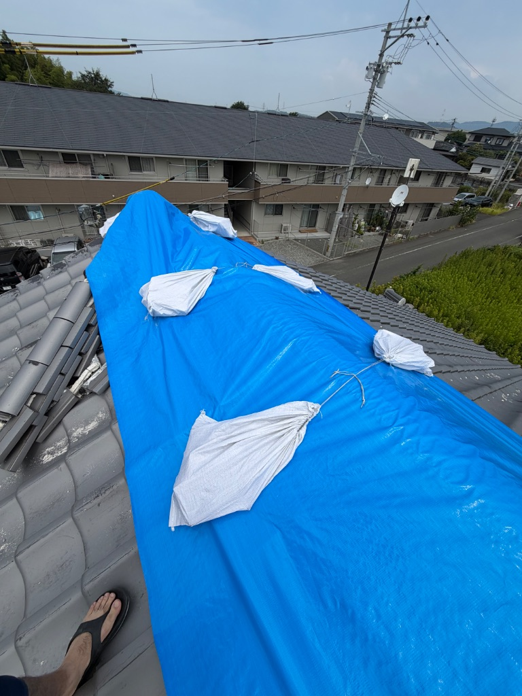
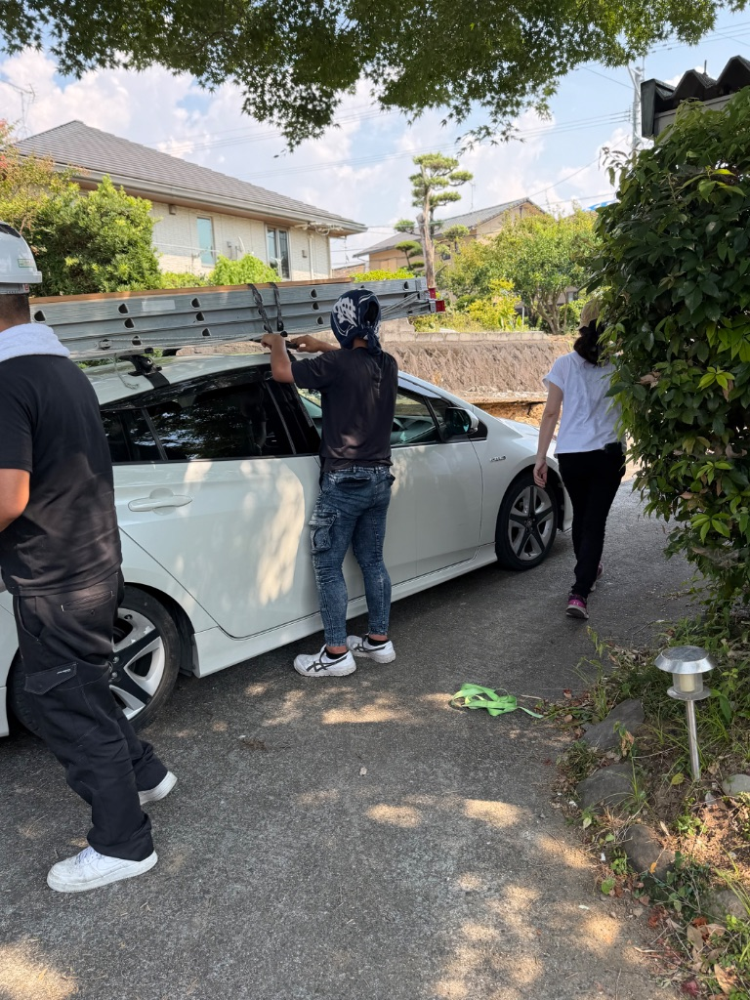
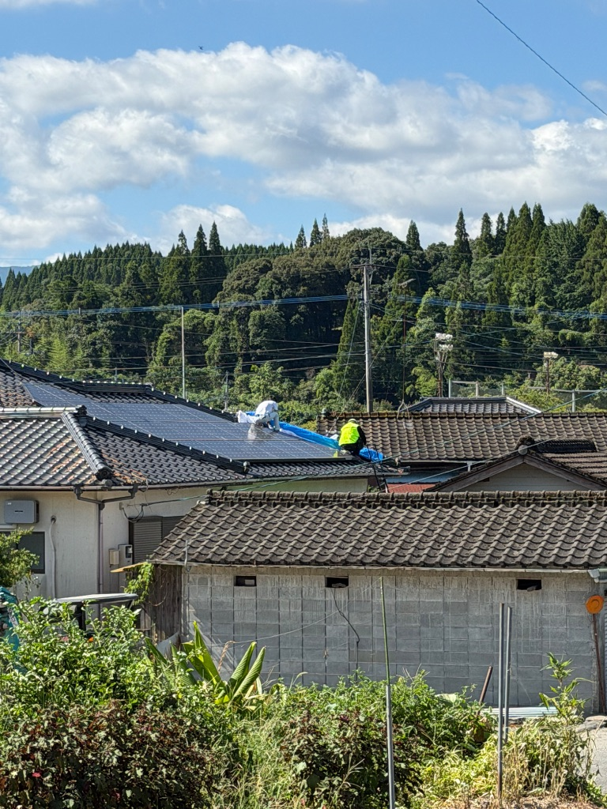
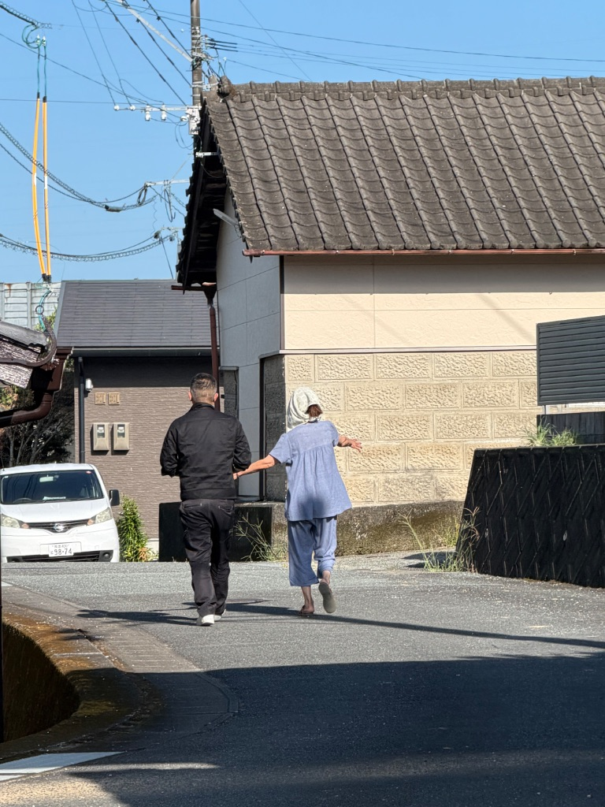

熊本地震ボランティア🙏82名の方にブルーシート養生！
スタッフと共に10日間、熊本で頑張りました✨
熊本地震が発生して、
すぐにスタッフがボランティアに駆けつけてくれた🙏
本当に頼もしいメンバーたち！
会社の枠を超えて、
「困ってる人を助けたい」って気持ちで動いてくれた✨

※ 地震で被害を受けた屋根にブルーシート養生💙
📅 10日間の約束
最初は10日までの約束で、
熊本に入った。
でも、
現地に行ってみたら、
想像以上に困ってる人が多くて💦
雨漏りして、
どうしたらいいかわからないって方、
本当にたくさんいた😢
👥 82名の方と出会いました
10日間で、
82名の方と出会って、
ブルーシート養生をさせて頂いた✨

※ 車に資材を積んで、現場へ🚗💨
簡単な養生だけど、
雨が入らないようにするのが精一杯。
でも、
みんな「助かった！ありがとう！」って、
めっちゃ喜んでくれた😭
その笑顔が、
私たちの頑張る力になった💪
🏠 屋根での作業

※ 屋根の上でブルーシート設置中！安全第一で💙
屋根の上での作業は、
正直めっちゃ大変💦
でも、
スタッフみんなが協力して、
安全第一で進めた✨
夏の熊本は暑いけど、
「少しでも多くの人を助けたい」って、
みんな頑張ってくれた😊
💬 たくさんの相談を頂きました

※ お客様と一緒に被害状況を確認🔍
ブルーシート養生をしながら、
たくさんの方から今後の心配や、
屋根をどうするべきかのお話を頂いた。
よく聞かれた質問：
- Q. 「このブルーシートはいつまで持つの？」
- Q. 「ちゃんとした修理はいつできる？」
- Q. 「費用はどれくらいかかる？」
- Q. 「保険は使える？」
- Q. 「また地震が来たらどうしたらいい？」
みんな、
すごく不安そうだった😢
でも、
一つひとつ丁寧に説明して、
少しでも安心してもらえるように頑張った✨
🚗 いったん東京に戻ります
10日間の約束だったから、
いったん東京に戻ることになった。
東京でやるべきお仕事も残ってるしね💦
だから、
数名のスタッフは帰宅して、
しっかり準備を整えることにした。
でも、これで終わりじゃない！
🌟 また熊本の皆様のために
準備を整えてから、
また熊本に戻ってくる予定✨
今度は、
ちゃんとした修理ができるように、
資材も人員も準備して！
これからやること：
- ✓ 熊本支社の開設 - 地元での拠点作り
- ✓ 資材置き場の確保 - 宇城市松橋に設置
- ✓ 本格的な修理 - ブルーシートだけじゃない本当の復旧
- ✓ 長期的なサポート - これからもずっと
熊本の皆様に、
少しでもお力になれればと思ってます💪
🙏 スタッフに感謝
すぐに駆けつけてくれたスタッフたち、
本当にありがとう🙏
休みも返上して、
暑い中、屋根の上で頑張ってくれた。
こんなに素晴らしいメンバーに恵まれて、
私は本当に幸せだなぁって思う😭
この経験を通じて、
チームの絆がもっと強くなった気がする✨
💙 熊本の皆様へ
82名の皆様、
お会いできて本当に良かったです😊
簡単なブルーシート養生でしたが、
少しでもお役に立てていたら嬉しいです。
また必ず戻ってきます！
今度は、
ちゃんとした修理で、
安心して住める家を取り戻すお手伝いをさせてください🏠
熊本、待っててね！
絶対にまた会いに行くから💪✨
💭 今日の気持ち
- ✓ 熊本地震ボランティア、10日間頑張った🙏
- ✓ 82名の方にブルーシート養生✨
- ✓ たくさんの相談を頂きました💬
- ✓ いったん東京に戻って準備🚗
- ✓ また熊本に戻ってきます💪
- ✓ スタッフに感謝🙏
- ✓ 熊本の皆様、待っててね💙